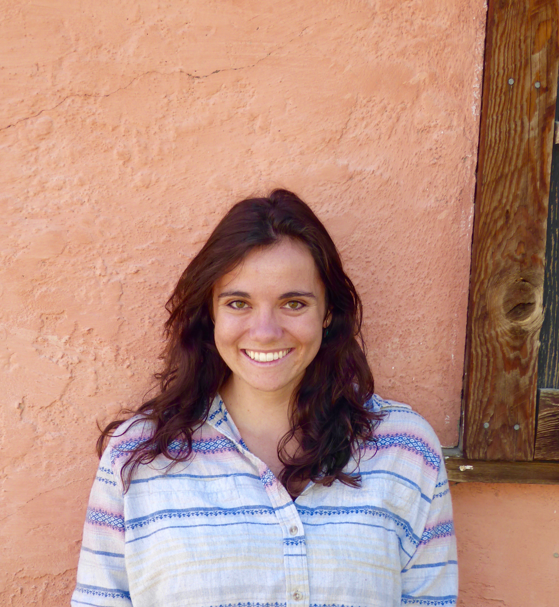
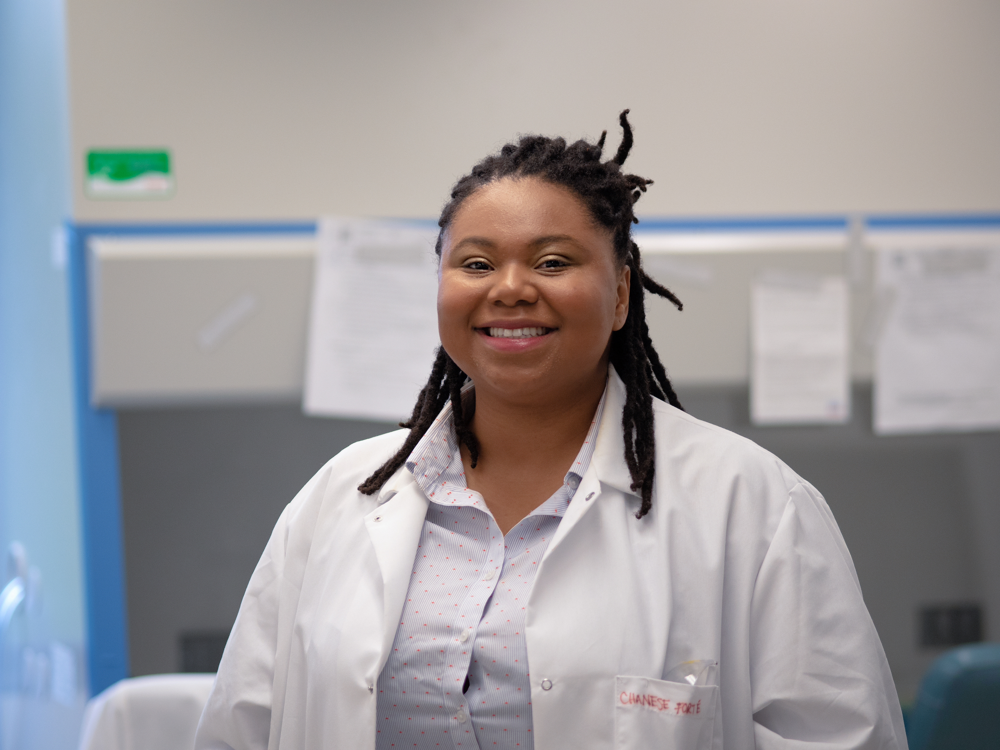

Rachel Woodbrook
Principal Investigator for the UM DEIA Data Toolkit Project, Data Curation Librarian (UM Library)
(Project conception, literature review, interview and survey protocols, interviews, survey administration, project administration, website)
Jake Carlson
Director, Deep Blue Repositories and Research Data Services
(UM Library)
(Project conception, interview and survey protocols, interviews)
Karen Downing
Education Librarian (UM Library)
(Project conception, literature review, interview and survey protocols, interviews, literature synthesis)

Elyse Thulin
M.Sc, PhD pre-candidate in Health Behavior/Education and Scientific Computing
(Interview and survey protocols, interviews, survey analysis, manuscript writing)
Emma De Vera
MSI, School of Information - Digital Curation
(Literature review and environmental scan, literature synthesis)

Megan Segoshi
Program Lead for Scholar and Community Engagement
(Survey protocol, survey outreach)
Emily Oxford
UMSI Masters' Candidate - Data Science
(Interview cleaning and processing)

Chanese Forté
PhD Candidate in Environmental Health Science and Scientific Computing
(Website build, interview and survey protocols, interviews)
Laura Sánchez-Parkinson
Asst Dir. of Programs & Development; Program Manager for Research (National Center for Institutional Diversity (NCID))
(Project conception, interview protocol, survey outreach)
Tierra Shannon
B.A., English
(Initial literature review and synthesis)